逃生者图鉴
全部幸存者角色信息，含背景故事、专属技能与实战定位。
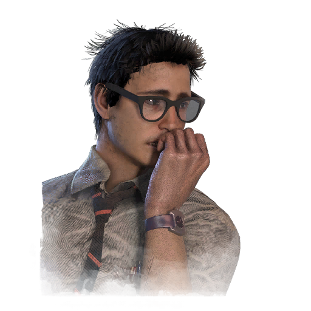
德怀特·费菲尔德 Dwight Fairfield
曾经在职场中被无视的小职员，被同事戏称为"隐形人"。一次公司团建让他误入迷雾，却在这里找到了属于自己的位置与伙伴。
专属技能羁绊 · 领袖群雄 · 证明自己
💡 团队协作核心，找队友快、抱团修机提速。
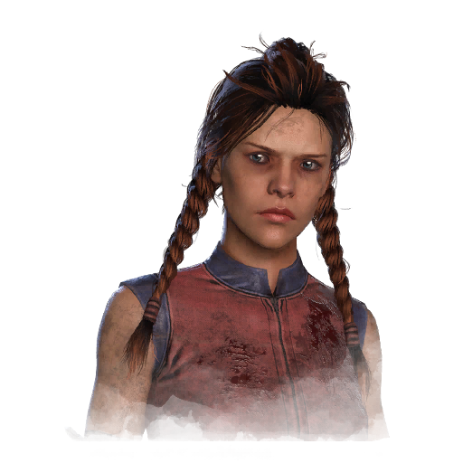
梅格·托马斯 Meg Thomas
天赋出众的田径运动员，在母亲过度的期待与掌控下长大，奔跑是她逃离束缚、证明自己的方式。
专属技能冲刺爆发 · 急速静谧 · 肾上腺素
💡 拉扯天花板，两段位移让她极难被追上。
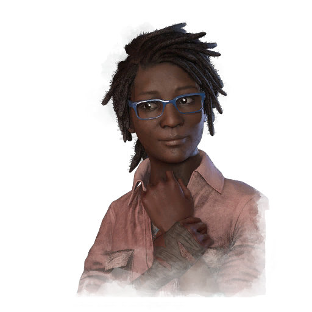
克劳黛特·莫莱 Claudette Morel
内向安静的植物学研究生，把对植物的热爱转化为治愈他人的力量，是团队中最可靠的生命线。
专属技能心灵共鸣 · 精研百草 · 自我疗愈
💡 治疗系代表，奶量十足，团队续航核心。
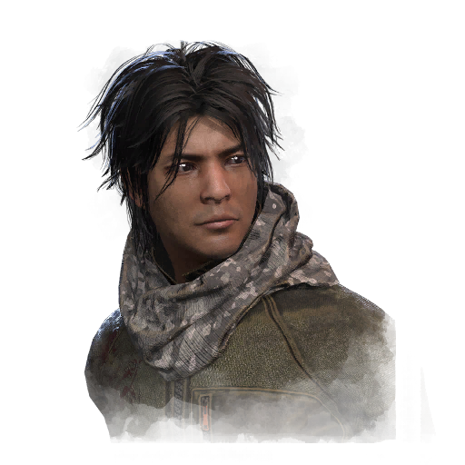
杰克·帕克 Jake Park
出身豪门却心向荒野，与家族决裂后隐居山林，练就一身隐蔽与生存的本领。
专属技能钢铁意志 · 安抚生灵 · 破坏手
💡 潜行独狼，受伤不吭声、惊鸟不叫，极难被追踪。
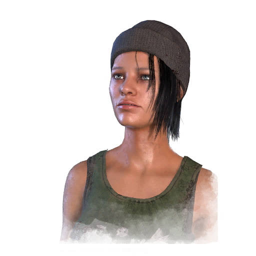
妮娅·卡尔森 Nea Karlsson
街头涂鸦艺术家兼跑酷者，城市的屋顶与小巷就是她的游乐场，来去无踪、身手敏捷。
专属技能平稳着陆 · 暴走族 · 都市生存
💡 跑酷女王，高楼跳下依旧从容，转点极强。
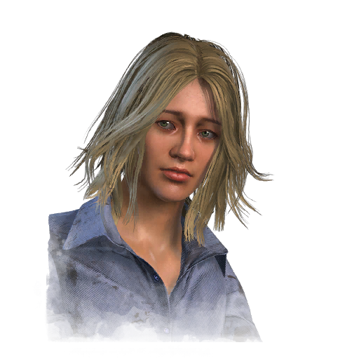
劳丽·斯特罗德 Laurie Strode
来自《万圣节》系列的"最终女孩"，一次次从迈克尔的追杀中幸存，早已深谙绝境求生之道。
专属技能果断反击 · 魂牵梦绕 · 最后的生还者
💡 被扛起也能果断反击，自保能力一流。
埃斯·维斯孔蒂 Ace Visconti
风度翩翩的老练赌徒，一生靠运气与算计行走江湖，即便进了迷雾也笑得从容。
专属技能锦囊妙计 · 稳操胜券 · 好运会传染
💡 气场与摸箱双修，运气型辅助好手。
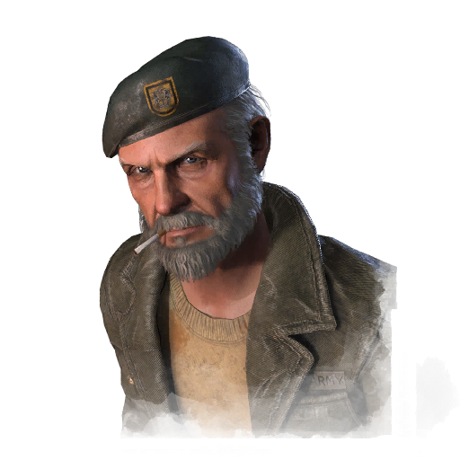
威廉·"比尔"·奥弗贝克 Bill Overbeck
来自《求生之路》的越战老兵，沉默寡言却愿意为同伴赴汤蹈火，是团队最坚实的后盾。
专属技能坚不可摧 · 时不我待 · 末日残兵
💡 倒地也能自救、扛住压力，绝境翻盘代表。

凤敏 Feng Min
曾为电竞选手的年轻女孩，为追逐梦想熬夜苦练，反应与操作都是顶尖水平。
专属技能技术员 · 警戒 · 轻盈敏捷
💡 翻窗加速+修机静音，攻守兼备。
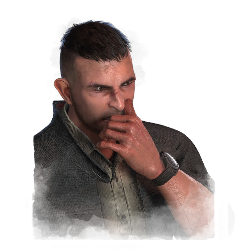
大卫·金 David King
脾气火爆的格斗好手，靠一双拳头在街头打拼，也把这份硬气带进了迷雾。
专属技能不痛不痒 · 生死与共 · 钢筋铁骨
💡 受伤仍硬朗，扛刀保护队友的硬汉。
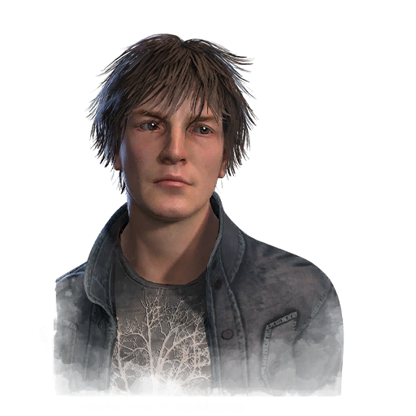
昆汀·史密斯 Quentin Smith
来自《猛鬼街》的失眠少年，与弗莱迪的梦魇斗争多年，早已学会在恐惧中保持清醒。
专属技能醒醒 · 药到病除 · 守夜人
💡 减少队友负面状态，开门战稳住局势。

大卫·泰普探长 Detective Tapp
来自《电锯惊魂》的执着警探，为追查拼图杀手而陷入绝境，观察力与直觉极强。
专属技能警探直觉 · 破案心切 · 永不言弃
💡 信息拉满，快速掌握局势与发电机点位。

凯特·登森 Kate Denson
向往自由的民谣歌手，背起吉他流浪四方，歌声里满是挣脱束缚的渴望。
专属技能与我共舞 · 机遇之窗 · 脱缰野马
💡 翻窗看板、甩掉屠夫，溜鬼高手。

亚当·弗朗西斯 Adam Francis
出身贫寒却靠努力成为教师的青年，用知识与温柔守护身边的每一个人。
专属技能善有善报 · 声东击西 · 自学成才
💡 钩上自救+救人反制，救人位利器。
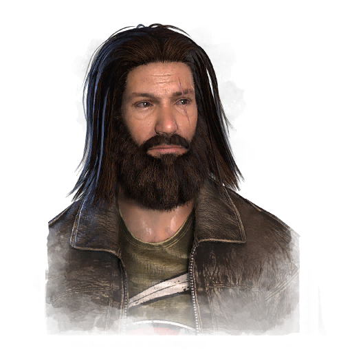
杰夫·约翰森 Jeff Johansen
沉默寡言的金属乐手兼纹身师，外表粗犷内心细腻，习惯在暗处观察一切。
专属技能分崩离析 · 劫后余生 · 气场失真
💡 气场信息丰富，遮蔽自身气场干扰屠夫。
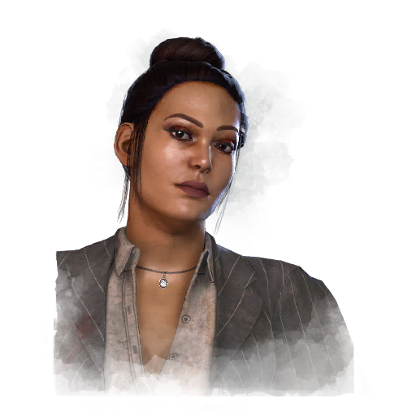
简·罗梅罗 Jane Romero
敢说敢做的主持人，靠一档脱口秀走红，气场强大、从不向恶势力低头。
专属技能勇往直前 · 团结一致 · 蓄势待发
💡 柜中蓄力撞晕屠夫，正面硬刚的狠角色。
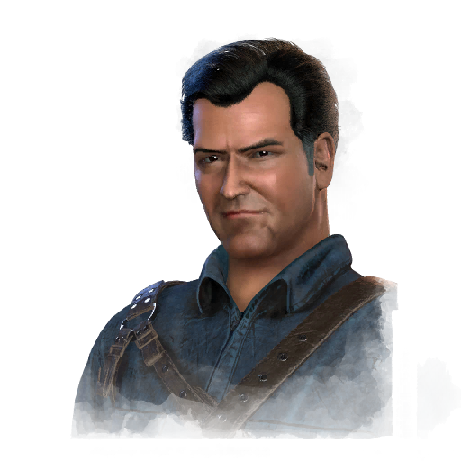
阿什利·"阿什"·威廉姆斯 Ash Williams
来自《鬼玩人》的传奇英雄，嘴炮与电锯是他的标志，运气和胆识一样离谱。
专属技能人之勇气 · 并行进展 · 未雨绸缪
💡 被打不慌、扶人更快，硬核牵制。
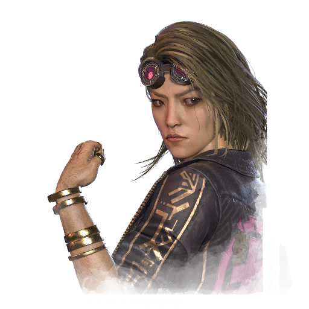
木村唯 Yui Kimura
桀骜不驯的街头赛车手，在男车手林立的世界里杀出重围，速度与胆魄兼具。
专属技能不惜一切 · 幸运喘息 · 挣脱激励
💡 受伤更稳、板子反复利用，溜鬼韧性足。
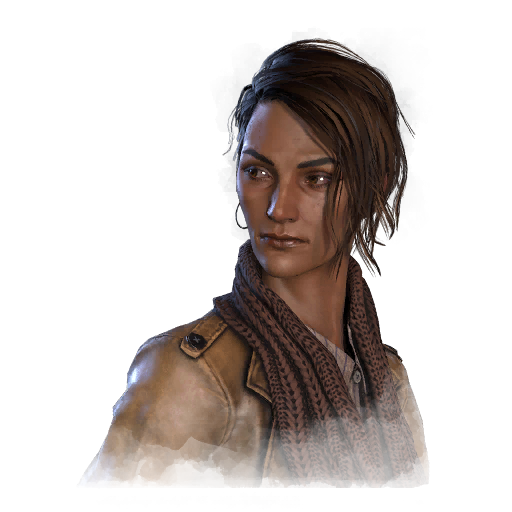
扎里娜·卡西尔 Zarina Kassir
追求真相的纪录片导演，为揭露不公而屡陷险境，正义感是她的动力。
专属技能舍己为人 · 转移注意 · 非正式调查
💡 舍命救人+隐蔽行踪，救人位优选。
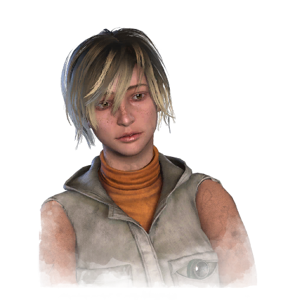
谢丽尔·梅森 Cheryl Mason
来自《寂静岭》的少女，在表里世界的恐怖中寻找真相，意志坚定。
专属技能压抑同盟 · 灵魂守卫 · 鲜血契约
💡 恩赐与联动丰富，倒地也有一战之力。
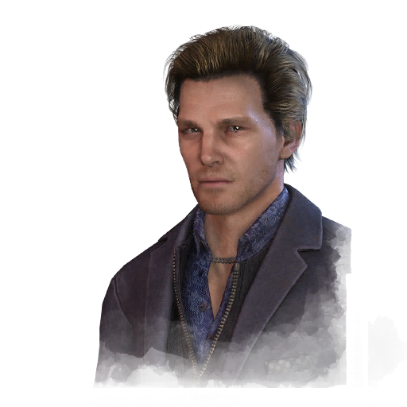
菲力克斯·里克特 Felix Richter
才华横溢的建筑师，用理性的眼光审视世界，也把这份严谨带进求生。
专属技能经久耐用 · 绝境对策 · 远见卓识
💡 道具续航+修机视野，全能型选手。

伊洛迪·拉科托 Élodie Rakoto
追寻神秘学与失落文明的研究者，好奇心驱使她深入迷雾。
专属技能兵不厌诈 · 强力挣扎 · 明察秋毫
💡 挣扎反击+净化图腾，反制能力出色。
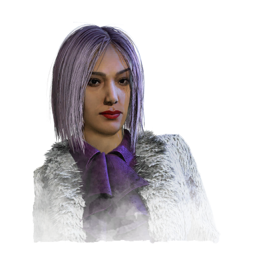
李允珍 Yun-Jin Lee
精明干练的音乐制作人，为名利不择手段，却在迷雾中重新审视自己。
专属技能成功捷径 · 自我保护 · 轰动演出
💡 砸晕屠夫+隐蔽自保，攻守兼具。
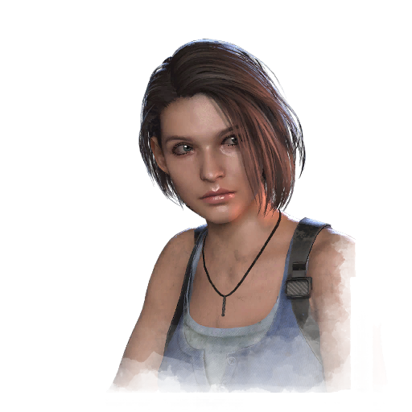
吉尔·瓦伦蒂安 Jill Valentine
来自《生化危机》的S.T.A.R.S.精英，与生化恐怖斗争多年，冷静果敢。
专属技能东山再起 · 反制之力 · 爆炸地雷
💡 炸弹反击+快速恢复，反杀能力强。
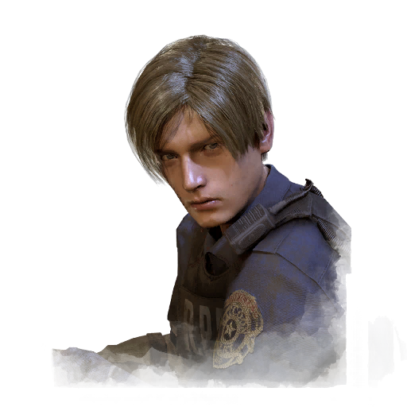
里昂·斯科特·肯尼迪 Leon S. Kennedy
来自《生化危机》的警员，从菜鸟一路成长为传奇特工，身手了得。
专属技能咬紧牙关 · 新人精神 · 闪光弹
💡 闪光弹控场+静音治疗，全能特工。

米凯拉·里德 Mikaela Reid
痴迷占卜与超自然的咖啡师，用神秘学力量庇护队友。
专属技能恩赐：治疗之环 · 恩赐：暗影步 · 千里眼
💡 恩赐图腾开创者，群体治疗与潜行兼备。
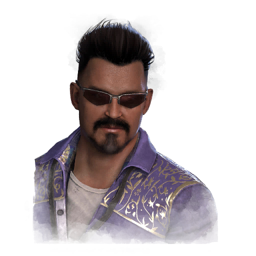
约拿·巴斯克斯 Jonah Vasquez
擅长解密的密码学专家，用数学逻辑破解迷雾的秘密。
专属技能矫正措施 · 克服难关 · 恩赐：指数增长
💡 修机提速+倒地自起，团队节奏发动机。
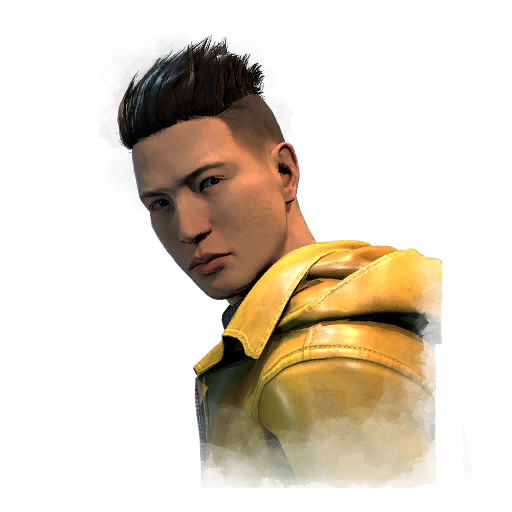
浅川洋一 Yoichi Asakawa
来自《午夜凶铃》的灵能力者，从诅咒中幸存并掌握超自然力量。
专属技能感同身受 · 亡父警言 · 恩赐：黑暗理论
💡 恩赐群体加速+快速治疗，支援核心。
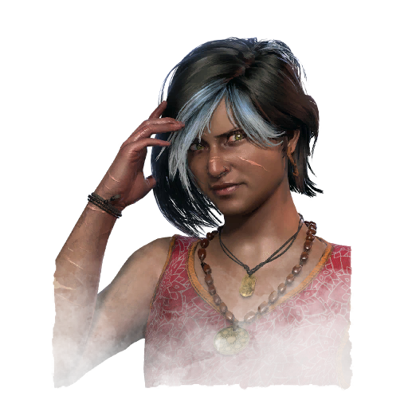
哈迪·考尔 Haddie Kaur
灵异调查记者，常年出入超自然现场，对未知世界了如指掌。
专属技能余光长存 · 内在专注 · 急于求成
💡 气场与修机信息丰富，局势掌控者。
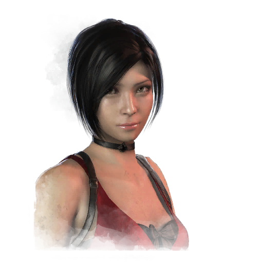
艾达·王 Ada Wong
来自《生化危机》的神秘特工，身份成谜、身手不凡，永远留有后手。
专属技能窃听器 · 低调行事 · 对策治疗
💡 监听屠夫+静音低调，情报型特工。

蕾贝卡·钱伯斯 Rebecca Chambers
来自《生化危机》的天才医疗兵，温柔而坚强，专业救护能力一流。
专属技能聚精会神 · 焕然一新 · 定心丸
💡 治疗提速+增益丰富，团队医疗担当。

维托里奥·托斯卡诺 Vittorio Toscano
穿越数个世纪的古老学者，掌握失传的神秘学知识。
专属技能迷雾慧眼 · 潜力无限 · 快速策略
💡 气场透视+恢复提速，视野型角色。

塔丽塔·莱拉 Thalita Lyra
巴西街头艺术家，乐观开朗，用热情感染身边每一个人。
专属技能团队合作：二人之力 · 友谊赛 · 当机立断
💡 双人联动加速，团队型支援。
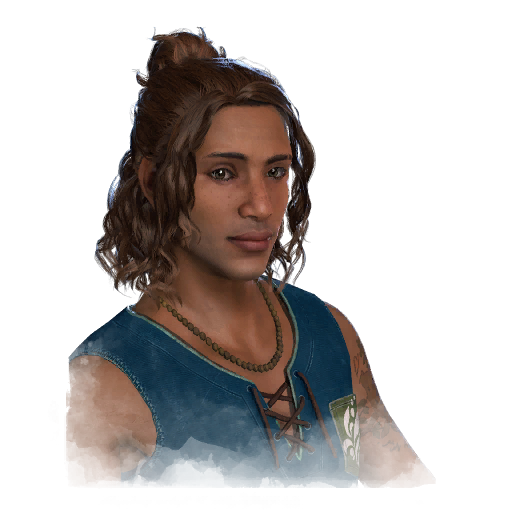
雷纳托·莱拉 Renato Lyra
塔丽塔的弟弟，冷静内敛的战术头脑，善于规划与配合。
专属技能团队合作：全体隐蔽 · 幕后玩家 · 滴血冲刺
💡 团队潜行+救人加速，策略型辅助。

加布里埃尔·索马 Gabriel Soma
来自未来的工程师，携先进科技穿越时空进入迷雾。
专属技能为生而生 · 清道夫 · 答疑解惑
💡 受伤加速+道具补给，硬核牵制。
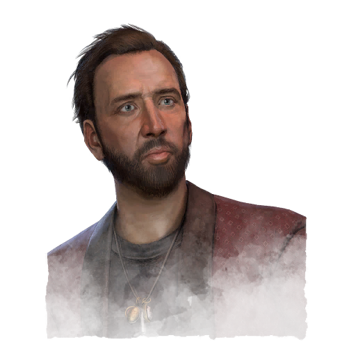
尼古拉斯·凯奇 Nicolas Cage
好莱坞传奇影星，以本色出演进入迷雾，浮夸又无所畏惧。
专属技能即兴表演 · 联袂主演 · 跌宕剧情
💡 随机增益+倒地回血，充满戏剧性。
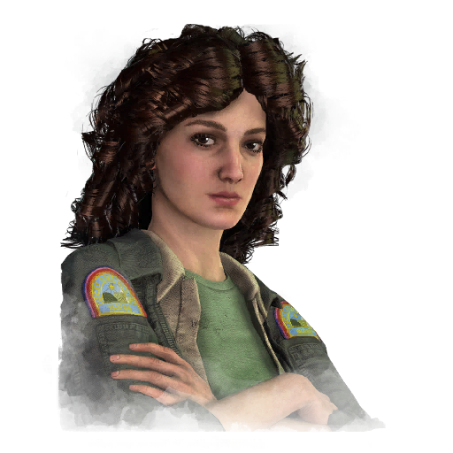
艾伦·雷普利 Ellen Ripley
来自《异形》的传奇女英雄，与异形的战斗锻造了她的钢铁意志。
专属技能化学陷阱 · 幸运星 · 轻盈猫步
💡 陷阱反制+静音潜行，经验丰富的幸存者。